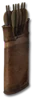

Heyday

Kurast Bolts
Bolts
Required Level: 30
+25% Piercing Attack
20% chance to cast level 15 Holy Bolt on striking
-10% to Enemy Magic Resistance
Adds 20-30 Damage
+5 Life after each Kill
Replenishes Quantity
Unique Bolts
Kurast Bolts
- Type
- Bolts
- Base
- Bolts
- Required level
- 30
- Item level
- 25
Other unique Boltss
- Replenishing Bolt Caselevel 6
- Bolt Case of Piercinglevel 35
- Bolt Case of Slayinglevel 65
- Bolt Case of Amplified Slayinglevel 85
- Bolt Case of Resistance Slayinglevel 85
- Bolt Case of Pestilencelevel 85
- Flames of Sanctuarylevel 80
- Sisterhood Boltslevel 15
- Reaper Boltslevel 45
- Bolts of Zakarumlevel 70
- Echoes of Harrogathlevel 90
- Dragon's Cinderlevel 48